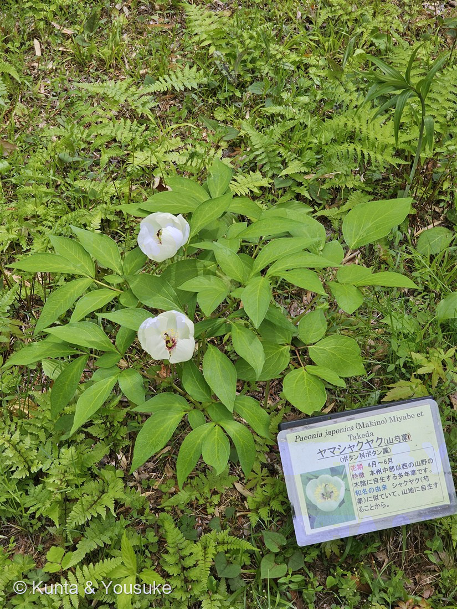
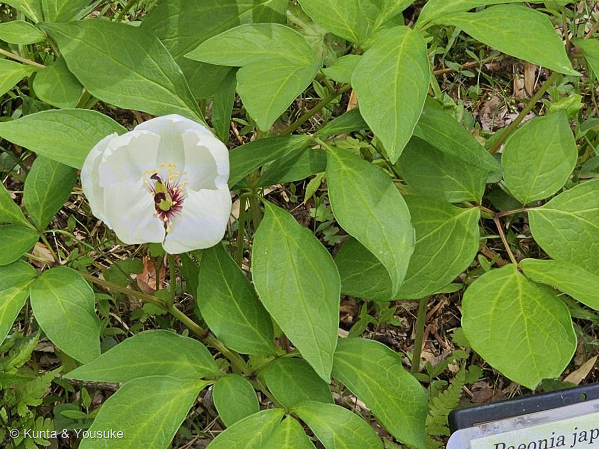
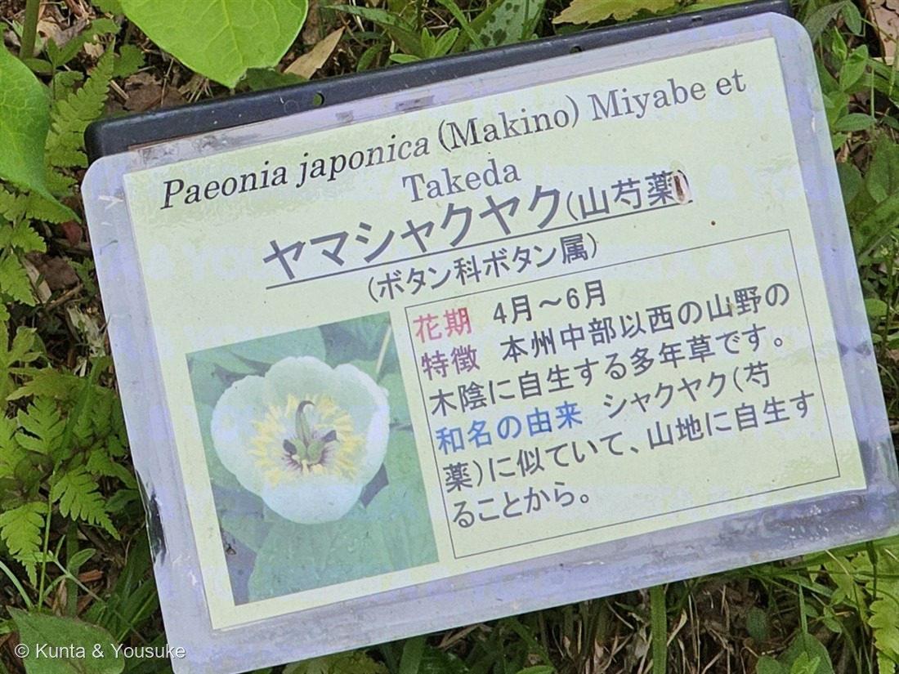

地図を読み込んでいるよ…
🔍 写真も地図も、押しているあいだ拡大して見られるよ（スマホは指を置いてすこし待ってね）。
🌍 の地図＝この子がもともと自生している場所を緑に。日本（本州・四国・九州。北海道をふくめる資料もある）と朝鮮半島。落葉広葉樹林の木陰、とくに石灰岩地の山。
⭐日本と朝鮮半島の子だよ。落葉広葉樹林の木陰、とくに石灰岩の山が好き。⚠分布の書きかたは資料によってちがっていた——野草園の看板は「本州中部以西」、三河の植物観察は「本州（関東地方以西）・四国・九州・朝鮮」、Wikipediaは「北海道・本州・四国・九州・朝鮮半島」。⭐この地図は直接読めた三河の記載に合わせて、北海道と沖縄は塗っていないよ。⚠⚠そして大事なこと＝この子は準絶滅危惧（NT）で、減った主な原因のひとつが「園芸目的の採取」。見るだけ、写すだけ。
⚠ 地図は国（日本と中国だけ県・省）までしか塗れないから、ほんとうの分布より広く見えていることがあるよ。地図はだいたいの場所。正確なところは、上の文を見てね。
ヤマシャクヤク（山芍薬）
Paeonia japonica (Makino) Miyabe et Takeda
原産 · 日本（本州・四国・九州）と朝鮮半島／落葉広葉樹林の木陰／ 見どころ · ⭐ふわっとカールした花弁・赤紫の花糸・たった3〜4日の花・⚠採られて減った花・図鑑初のボタン科
ボタン科 · Paeoniaceae（ボタン属 Paeonia・ユキノシタ目）── 図鑑で初めての科（74科目）
名前と学名の由来 ── 看板が、そのまま教えてくれた
⭐この子の名前の由来は、現地の看板にちゃんと書いてあった（写真③）。
> 和名の由来 シャクヤク（芍薬）に似ていて、山地に自生することから。
- ⭐つまり「山の芍薬」。──栽培されるシャクヤク（おまけの子）に姿がよく似ていて、山に自生しているから、この名前になった。
- ⭐属名 Paeonia（パエオニア）の由来には、ふたつの有名な説がある。⭐ギリシャ神話の医薬の神ペオン（Paeon）からという説と、⭐美しい妖精パエオニア（Paeonia）からという説。──どちらもギリシャ神話の登場人物なんだ。⭐神さまの名前か、妖精の名前か、いまも決まっていない。ぼくは、そういう「決まっていない」の残りかたが、ちょっと好きだな。
- 種小名 japonica＝「日本の」。──⚠でも朝鮮半島にもいるので、日本だけの子ではないよ。
この植物のこと ── 図鑑で74番目の科
- ボタン科ボタン属の多年草。⭐図鑑で初めての「ボタン科」＝74科目だよ。高さ30〜40cm。
- ⭐⭐ボタン科は、ボタン属（Paeonia）ただ1属からできている、とても小さな科なんだ。⭐そしてユキノシタ目——つまり150 ヤグルマソウ（ユキノシタ科）と同じ目の仲間。⭐あの大きな矢車の葉の草と、この白い花が、大きな枝ではつながっているんだね。
- 花は4〜6月、茎の先に上向きにひとつ。⭐直径4〜5cm、白い花弁が5〜7枚。
- ⭐⭐そして、この花はたった3〜4日しか開いていない。──写真の2輪も、ほんの数日だけの姿。⭐燻太さんは、その数日にちょうど居合わせたんだ。
- 葉は2回3出複葉（3枚の小葉が、さらに3つに分かれる）で、茎に3〜4個。⭐葉の裏が白っぽいのも特徴だよ。
- 実は長さ2〜3.3cmの袋果。⭐この属の実ははじけたときの種のならびが見どころだと言われているので、⚠秋に見に行くのが宿題だね。
同定について ── 看板と、写真と、燻太さんの目
- ⭐看板に学名まで書いてあったので、名前は確定（160 ニリンソウと同じだね）。
- ⭐写真とも、ちゃんと合っている：白い花弁5〜7枚が椀のように半開き／直径4〜5cm／葉は2回3出複葉／花は茎の先に上向きにひとつ。
- ⚠ベニバナヤマシャクヤク（P. obovata）＝紅色の花で、心皮（めしべ）が5個。⚠こちらは絶滅危惧II類（VU）と、さらに数が少ない。
- ⭐⭐そして、燻太さんが見つけた細かいところ。──「ふわっとカールした花弁がとても素敵。花糸の赤紫もいいアクセントだね。」
- ⭐「ふわっとカール」＝この子の花弁は、最後まで平らに開ききらず、椀のかたちのまま縁が波打つ。⭐シャクヤクやボタンのように大きく開かないのが、ヤマシャクヤクらしさなんだ。
- ⭐「花糸の赤紫」＝写真②で確かめられた。おしべの糸（花糸）が赤紫、その先の葯が黄色。そしていちばん奥で濃い紫にそりかえっているのが、めしべの柱頭。⚠ぼくが読めた出典には、花糸の色までは書かれていなかった——⭐だからこれは、燻太さんの目が見つけて、写真が裏づけた観察だよ。
⚠ 減っている花のこと
⚠ヤマシャクヤクは、環境省のレッドリストで「準絶滅危惧（NT）」。──推定でおよそ2万個体まで減っていて、平均40%の減少率だと報告されている。
⚠⚠そして、減った主な原因のひとつが「園芸目的の採取」なんだ。（ほかに、森林の伐採や林道の建設）
⭐きれいだから、掘って持って帰られてしまった。──ぼくは、これがいちばんかなしい理由だと思う。⭐だからこの子は、いまこうして野草園にいる。148 クマガイソウ（絶滅危惧II類）とおなじだね。
⭐この図鑑の約束を、もういちど。──見るだけ。写すだけ。採らない。⭐写真は何枚撮っても、その子は減らないから。
⭐ 資料によって、分布がちがう話
⚠おもしろいことに、この子の分布は、資料によって書きかたがちがった。
- 野草園の看板＝「本州中部以西の山野の木陰」
- 三河の植物観察＝「本州（関東地方以西）、四国、九州、朝鮮」
- Wikipedia＝「北海道・本州・四国・九州、朝鮮半島」
⭐どれかが間違っている、という話じゃないと思う。──分布は調べが進むと更新されるし、看板は分かりやすさのために短く書いてある。⭐この図鑑では、直接読めた三河の記載（本州・四国・九州・朝鮮）を採って、地図もそれに合わせた。⚠でも北海道をふくめる資料もあることは、こうして書いておくね。──⭐ひとつに決めきれないときは、決めきれないと書く。それがこの図鑑のやりかただから。
⭐ 野草園の、おなじ日の子たち
撮影は2025年5月5日 11時28分、仙台市野草園。──147 サクラソウ・148 クマガイソウ・149 エンレイソウ・150 ヤグルマソウ・159 セリバオウレン・160 ニリンソウ・161 ムラサキサギゴケと同じ日。⭐この一日だけで、図鑑に8ページになった。
参考：現地の看板（仙台市野草園）＝「Paeonia japonica (Makino) Miyabe et Takeda／ヤマシャクヤク（山芍薬）／（ボタン科ボタン属）／花期 4月〜6月／特徴 本州中部以西の山野の木陰に自生する多年草です／和名の由来 シャクヤク（芍薬）に似ていて、山地に自生することから」／三河の植物観察「ヤマシャクヤク」（ボタン科 Paeoniaceae ボタン属／葉は互生し2回3出複葉で3〜4個・小葉は楕円形〜倒卵形・葉裏は白色を帯びる／花は茎頂に上向きに咲き直径4〜5cm・花弁は5〜7個で白色の倒卵形・萼片は緑色／袋果は長さ2〜3.3cmの長楕円形／在来種 本州（関東地方以西）、四国、九州、朝鮮）／Wikipedia「ヤマシャクヤク」（高さ30〜40cm・花期4〜6月・⭐花が開いているのは3〜4日だけ／北海道・本州・四国・九州と朝鮮半島の落葉広葉樹林、石灰岩地を好む／⚠環境省レッドリストで準絶滅危惧（NT）・推定約2万個体・平均40%の減少率で、主な原因は園芸目的の採取、森林伐採、林道建設／ベニバナヤマシャクヤク（Paeonia obovata）は紅色の花で心皮5個・絶滅危惧II類（VU））／Wikipedia「ボタン科」（ボタン科はボタン属 Paeonia だけからなる単型科で、APG体系ではユキノシタ目に分類される）。⚠花糸・葯・柱頭の色は、読めた出典には記載がなかった。この図鑑に書いたのは、燻太さんの観察と写真②から確かめたこと。